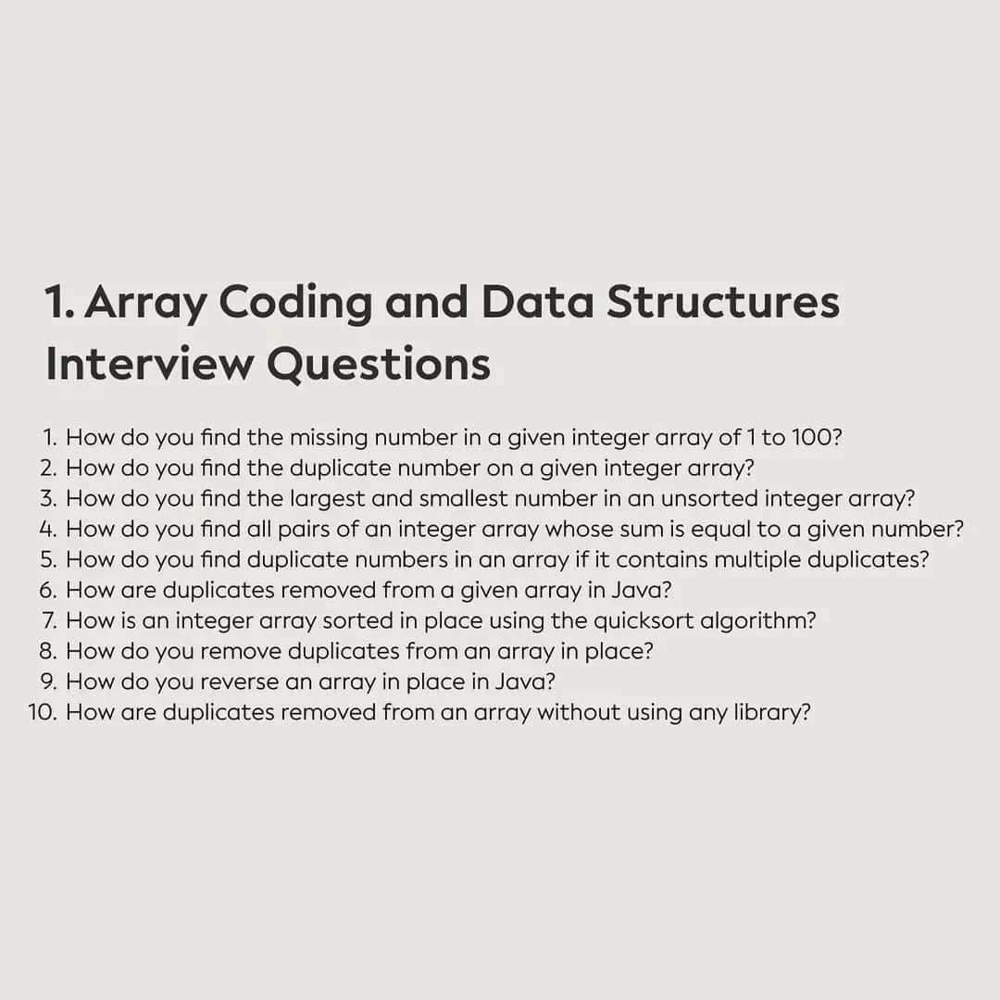
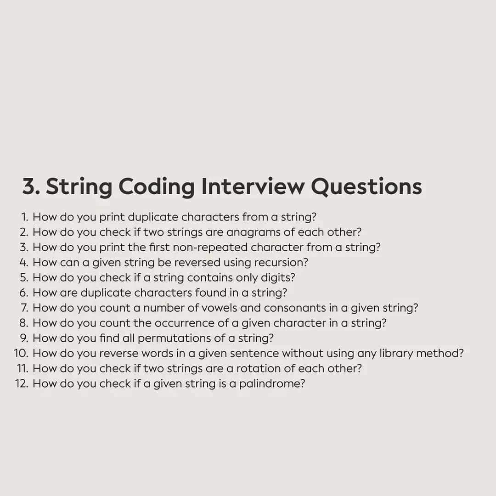
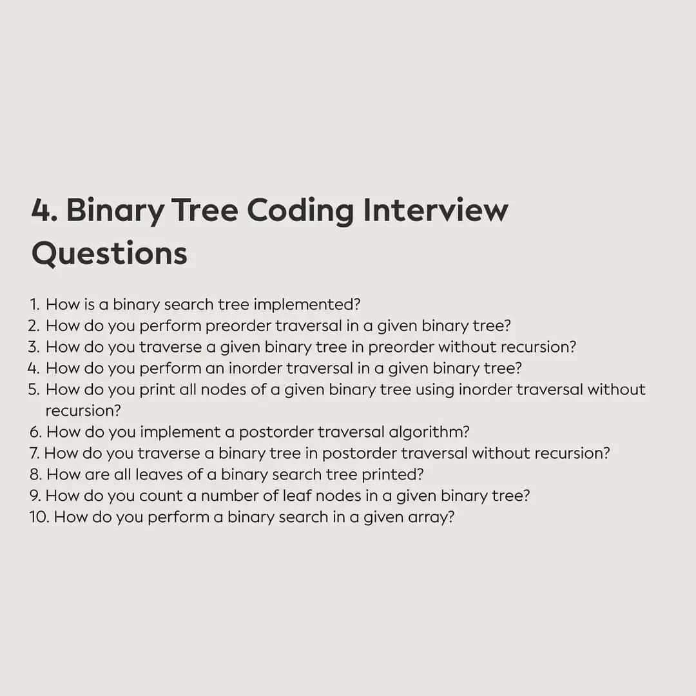

How do you find the missing number in a given integer array of 1 to 100 ?
function getMissingNumber(arr) {
let n = arr.length;
let total = 1;
for (let i = 2; i <= (n+1); i++) {
total += i;
total -= arr[i-2];
}
return total;
}
function getMissingNumber(arr){
let n = arr.length;
const naturalNum = (n+1)*(n+2)/2;
let total = 0;
for(let i = 0; i < n; i++){
total += arr[i];
}
return (naturalNum - total);
}
More than one the missing number in a given integer array of 1 to 100
function missingNumber(a) {
let result = [];
for (let i = 0, x = a[0]; x <= a[a.length - 1]; x++) {
if (a[i] != x) {
result.push(x);
} else {
i++;
}
}
return result;
}
How do you find the duplicate number on a given integer array?
function getMissingNumber(arr) {
let n = arr.length;
let total = 1;
for (let i = 2; i <= (n+1); i++) {
total += i;
total -= arr[i-2];
}
return total;
}
Introduction